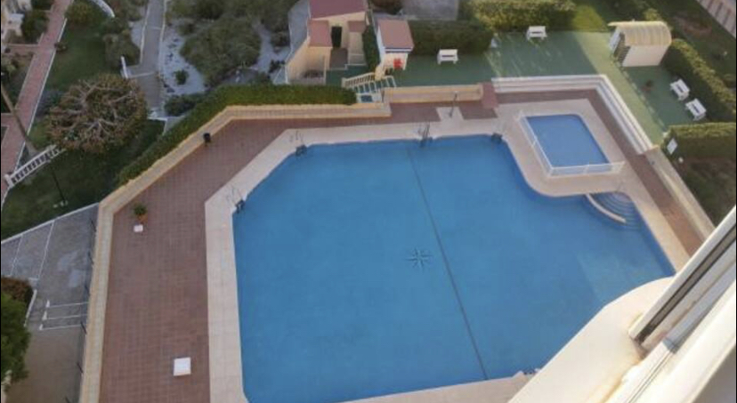
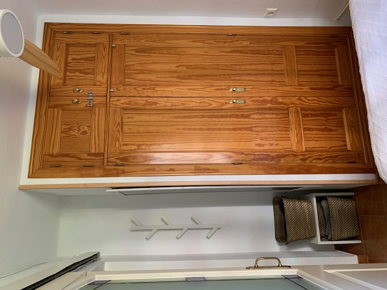
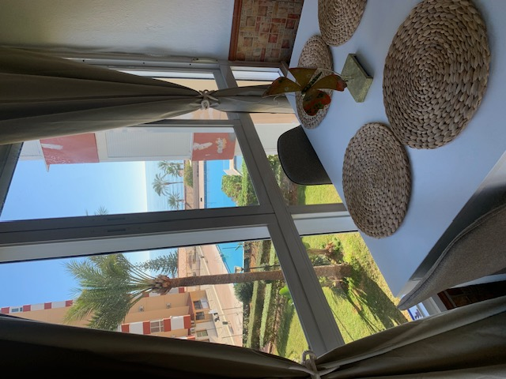

Bienvenido a Mi Página Web
Esta es una página web de ejemplo. Puedes editar este código y personalizarlo según tus necesidades.
¡Espero que te sirva como punto de partida para tu propio proyecto web!